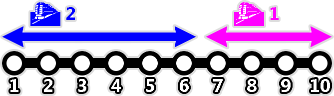
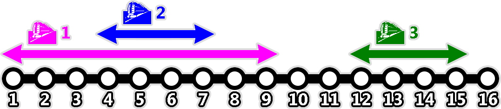
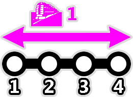

Di Jakarta, terdapat $N$ stasiun kereta rel listrik yang berjejer dalam satu garis lurus, dinomori $1$ hingga $N$.
Terdapat $M$ rute kereta yang memiliki jalurnya masing-masing, dinomori $1$ hingga $M$. Rute ke-$i$ memiliki empat nilai $A_i$, $B_i$, $C_i$, dan $D_i$. Kereta untuk rute ke-$i$ berjalan pulang-pergi antara stasiun $A_i$ dan $B_i$ ($A_i < B_i$). Setiap rute melayani dua sistem perjalanan:
Untuk menaiki sebuah kereta, kita perlu membeli sebuah kartu perjalanan seharga $T$ pada stasiun yang kita masuki. Namun, transit antarkereta bersifat gratis. Apabila kita mengakhiri suatu perjalanan kereta di suatu stasiun dan kita langsung menaiki kereta lain dari stasiun tersebut, kita masih bisa menggunakan kartu yang sama dan tidak perlu membeli kartu baru lagi. Setelah kita keluar dari stasiun, kartu perjalanan kita hangus dan kita harus membeli kartu baru di stasiun selanjutnya yang kita masuki jika ingin menaiki kereta lagi.
Di luar stasiun, terdapat juga rute angkot yang menjangkau seluruh stasiun. Perjalanan dari stasiun $x$ ke stasiun $y$ menggunakan angkot dikenakan tarif sebesar $K \times |x - y|$.
Bu Dengklek ingin pergi dari stasiun $P$ ke stasiun $Q$ dengan menggunakan kereta atau angkot (atau kombinasi keduanya). Berapakah biaya termurah yang mungkin?
Catatan: notasi $|x - y|$ menyatakan selisih dari $x$ dan $y$.
20 3 10 1 4 18 1 4 11 7 2 20 10 100 17 20 9 7
Masukan diberikan dalam format berikut:
N M K T P Q A1 B1 C1 D1 A2 B2 C2 D2 ⋮ AM BM CM DM
Keluarkan sebuah bilangan bulat yang menyatakan biaya termurah untuk pergi dari stasiun $P$ ke stasiun $Q$.
10 2 10 1 9 5 7 10 10 8 1 6 8 1
38
Di bawah ini adalah ilustrasi stasiun dan rute kereta:

Bu Dengklek ingin pergi dari stasiun $9$ ke stasiun $5$. Salah satu cara optimal adalah sebagai berikut:
Total biayanya adalah $1 + 10 + 8 + 10 + 1 + 8 = 38$.
16 3 3 1 2 14 1 9 2 12 4 7 4 5 12 15 3 1
28
Di bawah ini adalah ilustrasi stasiun dan rute kereta:

Bu Dengklek ingin pergi dari stasiun $2$ ke stasiun $14$. Salah satu cara optimal adalah sebagai berikut:
Total biayanya adalah $1 + 4 + 5 + 4 + 9 + 1 + 1 + 3 = 28$.
4 1 10 100 4 1 1 4 1 1
30
Di bawah ini adalah ilustrasi stasiun dan rute kereta:

Bu Dengklek ingin pergi dari stasiun $4$ ke stasiun $1$. Salah satu cara optimal adalah sebagai berikut:
Total biayanya adalah $30$.